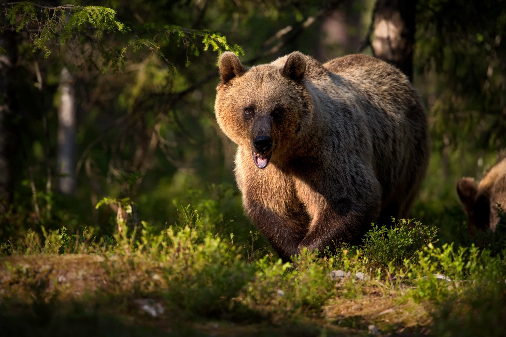

The Eurasian lynx (Lynx lynx) is one of the four extant species
within the medium-sized wild cat genus Lynx
HAVEN
Australian
SHEPHERD
The Australian Shepherd, a lean, tough ranch dog, is one of those
'only in America' stories: a European breed perfected in
California by way of Australia.
HAVEN
A Red Fox
CANINAE
Foxes are small-to-medium-sized omnivorous mammals belonging to
several genera of the family Canidae. They have a flattened skull;
upright, triangular ears; a pointed, slightly upturned snout; and
a long, bushy tail ("brush").

HAVEN
Marsican
BEAR
The Marsican brown bear, also known as the Apennine brown bear,
and orso bruno marsicano in Italian, is a critically endangered
population of the Eurasian brown bear,.
HAVEN
Quokka
MACROPOD
The quokka is a small macropod about the size of a domestic cat.
It is the only member of the genus Setonix. Like other marsupials
in the macropod family, the quokka is herbivorous and mainly
nocturnal.